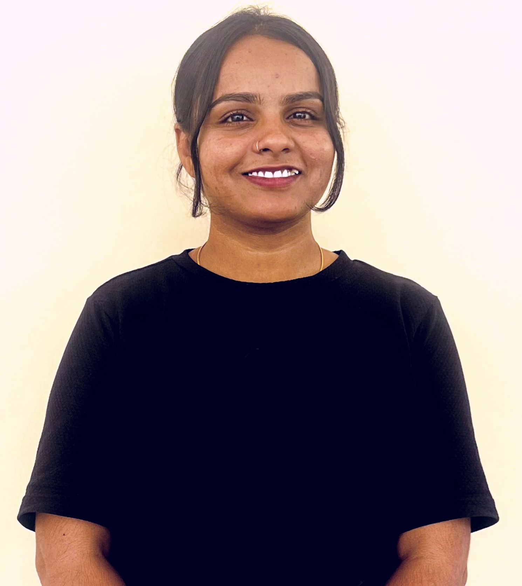

TEKUMATLA DEEPIKA

CAREER OBJECTIVE
- To obtain challenging career in the IT industry and put all my efforts into the growth of the organizaion and have a great working environment
SUMMARY
- An enthusiastic,punctual,career minded and determinant individual with good communication skills
EDUCATION
- B.Tech Computer Science from RGUKT Basar,Telangana (2019-2023).
- Intermediate from RGUKT Basar,Telangana (2017-2019).
- 10th from ZPHS Pedda Shapur (2017).
WORK EXPERIENCE
Fresher
SKILLS
- Languages : C,Python,Java
- Databases : Mysql
- Web Technologies : Html,Css,Javascript
OTHERS